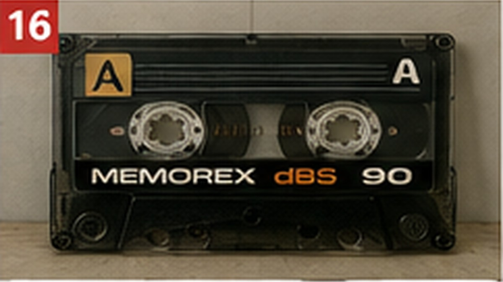
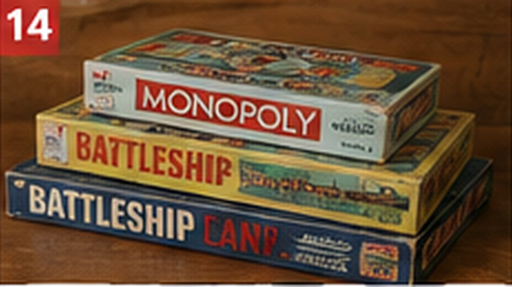

Curiosities
Everyday design details, unusual facts and the little questions people cannot resist opening.

Curiosities
Why Airplane Windows Have That Tiny Hole
It looks insignificant, but it helps the layered window manage pressure during flight.
READ STORY →
Curiosities
Why Jeans Still Have That Tiny Pocket
It seems almost useless now, but the original purpose made perfect sense.
READ STORY →
Curiosities
11 Everyday Objects With a Hidden Purpose Most People Never Notice
Some design details are so ordinary that we stop asking why they are there.
READ STORY →